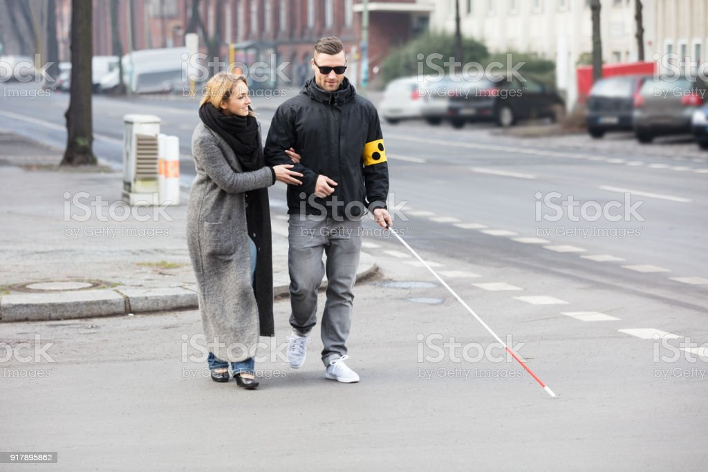
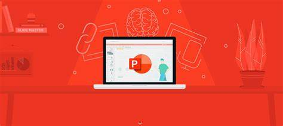
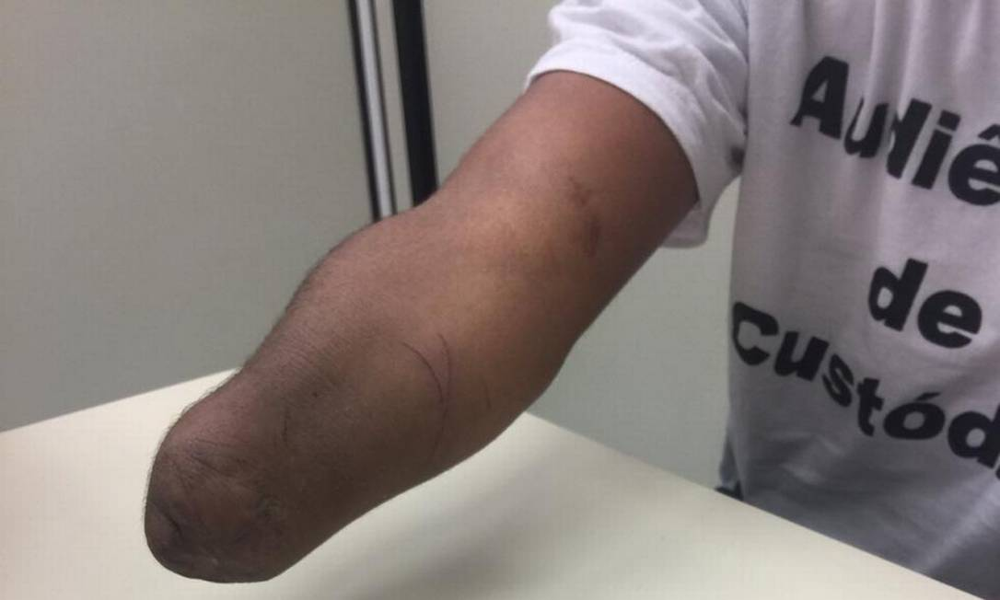

O que é Acessibilidade Digital?
Acessibilidade digital é a prática de garantir que pessoas com deficiência possam utilizar e interagir com tecnologias digitais, como sites, aplicativos e dispositivos eletrônicos.

Por que é Importante?
A acessibilidade digital é importante para promover a inclusão e igualdade de oportunidades para todas as pessoas, independentemente de suas limitações físicas.
Como Podemos Ajudar?
Existem várias formas de tornar a tecnologia mais acessível, como a utilização de padrões de codificação acessíveis, fornecer descrições alternativas para imagens e disponibilizar recursos para leitores de tela. Como essa página onde o mouse é inútil!

Como apliquei isso aqui?
Para deficientes físicos, sites como excesso de interatividade podem ser um problema, por isso, desenvolvi utilizando um modelo de apresentação de slides, onde sequer é necessário clicar em algum link para acessar as informações!

Apenas os manetas/pernetas são deficientes?
Por exemplo, quando você esta com as mão ocupadas, mas prescisa acessar algum tipo de dado/informação, naquele momento você se torna elegível a utilizar os recursos que a acessibilidade para manetas pode oferecer!
